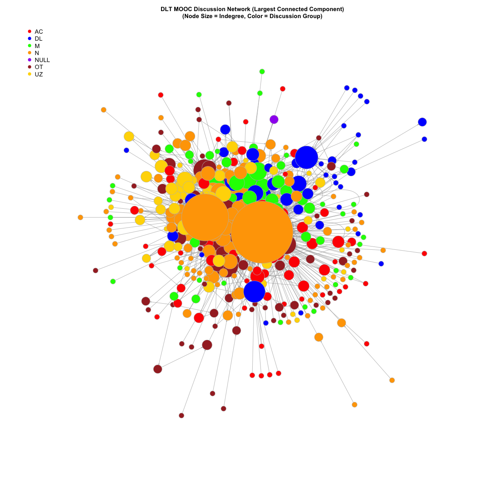

library(tidyverse)
library(igraph)
library(tidygraph)
library(RColorBrewer)
# Import the data
# Full edgelist with all 2,529 communication interactions
dlt_edges_raw <- read_csv("/Users/aishuhan/Desktop/Research/SSNA Final Proposal_Peer effect in online education/Data/DLT1 Edgelist.csv", col_types = cols(.default = col_character())) %>%
mutate(
Sender = as.numeric(Sender),
Receiver = as.numeric(Receiver)
)
# Import node attributes
dlt_nodes_raw <- read_csv("/Users/aishuhan/Desktop/Research/SSNA Final Proposal_Peer effect in online education/Data/DLT1 Nodes.csv", col_types = cols(.default = col_character())) %>%
mutate(UID = as.numeric(UID)) %>%
select(
UID,
role = role1, # Professional role
experience_yrs = experience2, # Years of teaching experience
group, # Discussion group assignment
gender,
location
) %>%
# Create numeric experience for potential analysis
mutate(
experience_median = case_when(
experience_yrs == "0 to 3" ~ 1.5,
experience_yrs == "4 to 5" ~ 4.5,
experience_yrs == "6 to 10" ~ 8,
experience_yrs == "11 to 20" ~ 15.5,
experience_yrs == "20+" ~ 25,
TRUE ~ NA_real_
)
)
# Extract all unique participant IDs from the edge list
all_participant_ids <- unique(c(dlt_edges_raw$Sender, dlt_edges_raw$Receiver))
dlt_nodes_filtered <- dlt_nodes_raw %>% filter(UID %in% all_participant_ids)
# Create network object from the edgelist
dlt_network <- graph_from_data_frame(dlt_edges_raw, directed = TRUE, vertices = dlt_nodes_filtered)
dlt_network_simple <- dlt_network %>%
as_tbl_graph() %>%
activate(edges) %>%
group_by(from, to) %>%
slice(1) %>%
ungroup() %>%
as.igraph()
# Extract the Largest Connected Component (LCC)
# This ensures all distance-based metrics work properly
components <- components(dlt_network_simple, mode = "weak")
lcc_nodes <- which(components$membership == which.max(components$csize))
dlt_lcc <- induced_subgraph(dlt_network_simple, vids = lcc_nodes)
# Determine which graph to use for analysis
if (vcount(dlt_lcc) != vcount(dlt_network_simple)) {
main_graph <- dlt_lcc
is_lcc <- TRUE
} else {
main_graph <- dlt_network_simple
is_lcc <- FALSE
}
total_nodes <- vcount(dlt_network_simple)
lcc_size <- vcount(main_graph)
main_graph <- induced_subgraph(dlt_network_simple, vids = lcc_nodes)How we decide who is the most important person in a network? Or how to measure if a network is tightly connected or spread out? In this tutorial, we’ll explore network metrics that help us answer these questions. We’ll learn about centrality (who matters and why) and connectivity (how the network is structured overall).
Think of centrality like measuring influence in different ways: Is someone popular because they know lots of people? Or because they connect different groups together? Or because they’re friends with other influential people? Each centrality measure captures a different aspect of “importance.”
We’ll work with real data from a MOOC discussion forum to see these concepts in action. By the end, you’ll understand how to calculate and interpret key network metrics using R.

1. Introduction
Dataset: Digital Learning Transition (DLT) MOOC Discussion Forum
The dataset we used here comes from an online course discussion forum where participants asked questions, shared resources, and replied to each other. Each node represents a person (student, teaching assistant, or facilitator), and each directed edge represents one person replying to or mentioning another.
- Type: Directed (replying has a clear direction: from sender to receiver)
- Nodes:
vcount(main_graph)participants (out oftotal_nodestotal) - Edges: Communication interactions (replies and mentions)
- Attributes: Role (teacher, librarian, administrator), years of experience, grades, location, group, gender
For this analysis, we focus on the Largest Connected Component (LCC) of the network, which contains the participants who are all connected through some path of communication. This ensures our distance-based metrics are meaningful.
Tip
Why use the Largest Connected Component? Many centrality metrics (like closeness and betweenness) rely on calculating shortest paths between nodes. If your network has disconnected pieces, these calculations can’t span across the gaps. By focusing on the LCC, we ensure everyone in our analysis can theoretically reach everyone else through the communication network.
2. Core Concepts: Centrality
Centrality measures help us answer: Who are the most important nodes in this network? But “importance” means different things depending on what you care about. Let’s explore four major types of centrality.
Note
In this tutirial, we’ll work with undirected networks for simplicity and easier visualization. While some of these relationships could be considered directed in real life (e.g., one person nominate another as a freiend), treating them as undirected in this tutorial helps us focus on fundamental concepts without getting tangled in the complexities of directed network analysis. We’ll get to the directed network later.